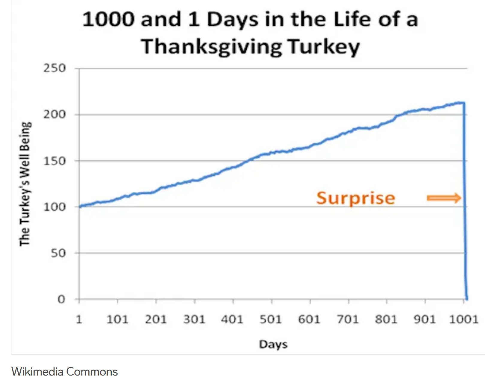
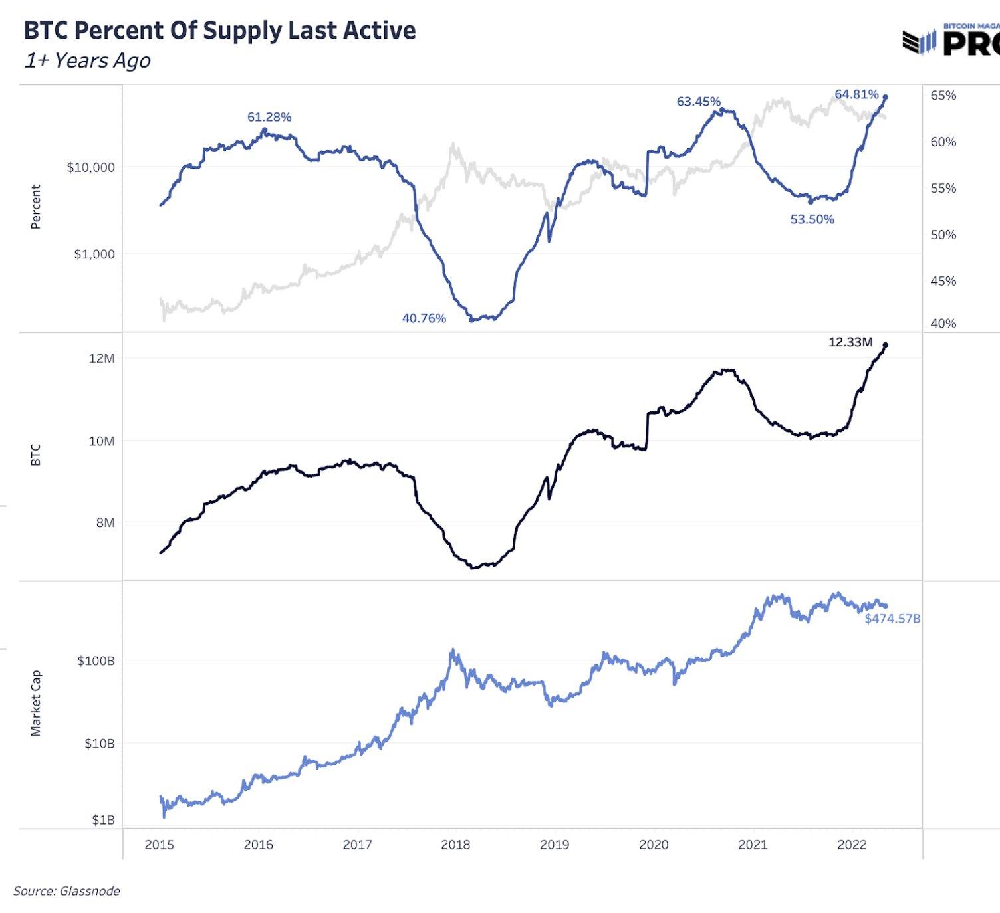

Risks and mitigations
- Looking across the whole sector, this paragraph from the Bank of International Settlement (BIS) sums everything up:
- “..it is now becoming clear that crypto and DeFi have deeper structural limitations that prevent them from achieving the levels of efficiency, stability or integrity required for an adequate monetary system. In particular, the crypto universe lacks a nominal anchor, which it tries to import, imperfectly, through stable coins. It is also prone to fragmentation, and its applications cannot scale without compromising security, as shown by their congestion and exorbitant fees. Activity in this parallel system is, instead, sustained by the influx of speculative coin holders. Finally, there are serious concerns about the role of unregulated intermediaries in the system. As they are deep-seated, these structural shortcomings are unlikely to be amenable to technical fixes alone. This is because they reflect the inherent limitations of a decentralised system built on permissionless blockchains.”
- This might seem like reason enough to stop here and wait for central bank digital currencies, but Bitcoin is here now, is likely unstoppable in, and with mitigations in place might have uses if developed properly. Perhaps surprising the same BIS is allowing up to2% of bank reserves to be held in crypto assets, including Bitcoin, according to their June 2022 Basel Committee on Banking Supervision report, though the BIS chief believe the “battle” against crypto has already been won.
- Lightning and Similar L2 are still considered to be experimental and not completely battle tested. There have been various attacks and a major double spend attack may be possible, but there have been no major problems in the years it’s been running with careful design choices and cybersecurity best practice it it likely a production ready component of Agents based systems.
Sociopaths everywhere
- In the wake of the rampant crime spree by Sam Bankman-Freid and his top teams at Alameda research and the Bahamas registered exchange ‘FTX’ the whole industry has suffered, and will continue to suffer, seismic shocks. There is a chance the sector will never recover, from the substantial negative sentiment in American democratic politics, and that we are seeing the top of the hype bubble in the crime adjacent Trump era. Fortunately this doesn’t diminish our use cases for these technologies, as we were never planning to speculate with the asset, but rather use the network and protocol for complex systems.
Crypto assets
-
For “crypto” assets more generally it is useful to look at the recent “whole government executive order”signed by President Biden early in 2022. It was mainly framed in terms of “responsible innovation, and leadership” in the new space. The resulting, “Comprehensive Framework for Responsible Development of Digital Assets” was a product of multi agency collaboration and can be seen as 9 reports and a summary document, and was long anticipated. The summary itself is neither particularly comprehensive nor a framework, and mainly serves to identifies high level risks, aspirations, and challenges, and strongly hints toward eventual development of a “digital dollar” (CBDC, expanded later). This work has been repealed completely as the Trump administration eschews CBDCs and openly promotes crypto.
-
The risks section of the original executive order shows how legislatorsare framing this, so it’s useful to break down here.
- Consumer and business protections. This is likely to pertain to custodians and is much needed. Misselling is rife. Security presents a challenge.
- Systemic risk, and market integrity are a concern. The legislators clearly worry about contagion risks from the sector.
- Illicit finance (criminality and sanction busting etc) are a concern, but not particularly front and centremoser2013inquiry. Criminality in 2021 was a mere 0.15% of transactions according to Chainalysis, but this number varies year to year. There are claims that Iran have begun official overseas buying with cryptocurrencies, but again, the numbers are small. One of the better sections of the work is the US treasury department’s recently published ‘National Risk Assessments for Money Laundering, Terrorist Financing, and Proliferation Financing’. This is a comprehensive report and speaks to careful research across the space. It is broken into three parts. Perhaps surprisingly, while they do see activity in these areas, they do not rate the risk as very significant. Cash remains the main problem for illicit funding. There is some talk that the nature of public blockchain analysis allows greater oversight of these tools and that this is to the advantage of government and civil enforcement agencies.
- Highlighting the need for international coordination suggests they are mindful of jurisdictional arbitrage.
https://twitter.com/iamLeonHill/status/1847973039234846747
- The partial regulatory capture of these technologies, where activity flows to globally more lenient legislative regimes, continues to be a concern. Many of the centralised exchanges for instance are located in tax havens such as Malta. As the world catches up with these products it is likely that this will be smoothed out.
- Climate goals, diversity, equality and inclusion are mentioned. It seems that the “environment” aspect of ESG is more important then “social” and “governance” at this time.
- Privacy and human rights are mentioned.
- Energy policy is highlighted, including grid management and reliability, energy efficiency incentives and standards, and sources of energy supply.
-
The latest summary report resulting from the above guidance actually adds little tangible meat to the bones. This possibly reflects the complexity of these issues. The recommendations seem to be broadly as follows, and are really a copy/paste of the executive order.
- Carry on doing research into central bank digital currencies, but there’s no particular rush.
- Support development of better instant payment methods both at home and globally.
- Ensure consumer and systemic protections.
- More monitoring, civil and criminal prosecutions.
- Issue more rules and clarity in response to risks (this is actually likely net positive as rules are currently unclear).
- Improve global reporting on users (KYC/AML).
-
The government rhetoric to date in the USA can be seen to be converging on an understanding of the technology, at different rates in different parts of government. One thing that seems to shine through is their own perception of their global leadership on legislation on these matters. They seems to assume that what they decide will guide the world, and this may be true through their KYC/AML pressures.
-
A recent proposed bi-partisan bill in theUSA will likely help inform global law, though it is unlikely to pass itself. It encourages the use of Bitcoin as a medium of exchange by applying a tax exemption on transactions of less than $200. The issue of whether an asset is a commodity (a raw material thing) or a security (a promise) is left to a couple of major government agencies to unpick, with corresponding reporting requirements. Crucially for this book these nascent bills all regard both Bitcoin and Ethereum as sufficiently decentralised to qualify ascommodities,meaning they would enjoy more lenient oversight. Far more likely to pass is the proposed DCCPAbillwhich has senior lawmaker support and would see commodities in the space regulated in such a way that trading of it could be halted in the USA. In this line of policy, exchanges will be required to do far more reporting, and would be penalised for trading against their customers. DOAs and DeFi are the big potential losers. In a maddening twist the Office of Government Ethics in the USA has banned anyone who owns digital assets from working on the legislation. This is an exceptional move and likely to result in poorly crafted laws in the first instance.
-
The most recent and troubling example is the US ban on any Ethereum assets which have been through a “mixer service” that obfuscates history. This is a huge constraint on the code and smart contract itself, not just sanctions against individuals. It has ‘freespeech’and constitutional implications.anderson2002free More such actions and arrests of developersare feared. It has led to Circle (who issue the USDC stable coin)blacklisting every address sanctioned by the US government. Centrally issued digital assets are obviously neither uncensorable nor permissionless. This intersects (again) with the whole question of what decentralisation means and how effective it can be in it’s stated goal of circumventing global policies.
Bitcoin technical risks
- In addition it’s useful for this document to focus more on the technical challenges to the Bitcoin network.
- The block reward is reduced every 4 years (epochs). This means a portion of the mining reward is trending to zero, and nobody knows what effect this will have on the incentives for securing the network through proof of work.carlsten2016instability It is increasingly being discussed as the major eventual problem for the network.
- Stablecoins are a vital transitional technology (described later) but do not meaningfully exist yet on the Bitcoin network. This may change.
- Bitcoin lacks privacy by design. All transactions are publicly viewable. This is a major drag to the concept of BTC as a money. Upgrade of the network is possible, and has indeed been achieved for a Bitcoin fork called Litecoin.fuchsbauer2019aggregate
- The Lightning network (described later) has terrible UX design at this time.
- The basic ‘usability’ of the network is still poor in the main. Any problems which users experience demand a steep learning curve and risk loss of funds. There is obviously no technical support number people can call.
- Only around one billion unspent transactions can be generated a year on the network. This means that it might become impossible for everyone on the planet to have their own Bitcoin address (with it’s associated underpinning UTXO).
- Chip manufacture is concentrated in only a few companies and countries, as identified by Matthew Pines.
- Potential constraints on monetary policy flexibility.
- Future protocol changes.
- Unanticipated effects on the domestic and international energy system.
- Vulnerability to adversary attacks are widely studiedapostolaki2016hijacking; @apostolaki2017hijacking; @johnson2014game; @stinner2022proof, and still pretty much completely speculative because of the complex nature of the attack surface.
- Mining tends toward economy of scale concentration. Many are already on their own specialised network to connect to one another.
- Future hard forks. There will doubtless be pressure to fork the code to add inflation, or ESG mitigations, or to fix the UNIX clock issue in 2106. Each fork is a risk.
- Other unknown, unanticipated risks given Bitcoin’s limited 13-year history.
- There is a “non-zero” chance that Bitcoin is a complex government intelligence agency construct, much like Crypto AG was toward the end of the last century.dymydiuk2020rubicon
Risks (money, not technical)
- Special thanks to economist Tim Millar for help with this section.
Risks to Bitcoin the money (intrinsic)
Geopolitics
- It can be seen that following the invasion of Ukraine by Russia, that sanctions of various kinds were applied to the Russian economy. One of these was the previously discussed Swift international settlement network. Another whole category was the removal of support by private businesses domiciled outside of Russia and Ukraine, and pertinent here is that VISA, Mastercard, Paypal, and Western Union all removed support for their product rails. This means that while some cards and services still work, and will likely work again through Chinese proxies in the coming months, considerable disruption will be felt by Russian companies and individuals. This is not to say that this disruption is necessarily wrong, but it is clear now that all of these global financial transfer products and services are contingent on political factors. The same might be true of CBDC products if they gain traction globally. There is certainly no reason why all money within a physically delineated border could not be blocked or cancelled. This is not as true for Bitcoin at this time.
- However, with enough political will it is technically plausible to incentivise miners with additional payments to exclude transactions from geolocated wallets. This would be mitigated by Tor, and in a global anonymous network it is very likely that a miner could be found at a higher price for inclusion in the next block.
- We have already seen much negative political positioning related to the energy concerns in an earlier chapter. There are similar noises coming from policy makers with regard to the money utility of the technology. The United Nations have made the following recommendations:
- “Developing countries may have less room to manoeuvre, yet the regulation of cryptocurrencies is possible. The following policies, among others, have the potential to curb the further spread of the risks of cryptocurrencies and stablecoins:
- Ensuring comprehensive financial regulation, through the following actions:
- Require the mandatory registration of crypto-exchanges and digital wallets and make the use of cryptocurrencies less attractive, for example by charging entry fees for crypto-exchanges and digital wallets and/or imposing financial transaction taxes on cryptocurrency trading;
- Ban regulated financial institutions from holding stablecoins and cryptocurrencies or offering related products to clients;
- Regulate decentralized finance (such finance may, in fact, not be fully decentralized, given its central management and ownership, which form an entry point for regulation);
- Restricting or prohibiting the advertisement of crypto-exchanges and digital wallets in public spaces and on social media. This new type of virtual, and often disguised, advertisement requires policymakers to expand the scope of regulation beyond traditional media. This is an urgent need in terms of consumer protection in countries with low levels of financial literacy, as even limited exposure to cryptocurrencies may lead to significant losses;
- Creating a public payment system to serve as a public good, such as a central bank digital currency. In the light of the regulatory and technological complexity of central bank digital currencies and the urgent need to provide safe, reliable and affordable payment systems, authorities could also examine other possibilities, including fast retail payment systems.
- “Developing countries may have less room to manoeuvre, yet the regulation of cryptocurrencies is possible. The following policies, among others, have the potential to curb the further spread of the risks of cryptocurrencies and stablecoins:
- This is tough talk. We have seen that the IMF is willing to make theirloans contingent on such regulation, and are increasingly talking about banning the technology. This global response to the technology is a significant headwind, but like the internet itself, it’s very hard to actually stop these products being used.
Capture by traditional finance Update Cycle
- As the popularity of Bitcoin continues to grow, traditional financial market incumbents have begun to take notice. In an effort to assert their dominance and protect their interests, these incumbents have turned to regulation and acquisition as means of capturing the growing markets. This is most clear in the ’alt coin’ space where traditional banks have leveraged their knowledge and marketing to transfer money from retail investors into their own venture capital operations. This is not to say that Bitcoin is immune from these harms.
- One way that traditional financial market incumbents have sought to capture the bitcoin market is through the use of regulatory frame works. By working with government agencies (as described in previous chapters),to develop and implement regulations governing the use and trade of cryptocurrencies, these incumbents are able to limit competition and control the flow of capital into and out of the markets. They are also able to “print paper bitcoin”, running a fractional reserve operation, as happened in the FTX/Alameda fiasco.
- We have already described how, in the United States, the Securities and Exchange Commission (SEC) has implemented regulations governing the issuance and trading of bitcoin-based securities. These regulations, which require issuers of bitcoin-based securities to register with the SEC and comply with a variety of reporting and disclosure requirements, have effectively made it difficult for small and independent players to enter the market.
- Another way that traditional financial market incumbents have sought to capture the bitcoin market is through the use of partnerships and acquisitions. As the newer companies stumble and fail as a result of poor risk management and over-leverage it seems that Wall Street incumbents like Goldman Sax are taking advantage of the opportunityat structural scale. By acquiring existing crypto companies, these incumbents are able to gain access to the technology, expertise, and customer base of these companies, giving them a significant advantage over their competitors.
- For example, in 2017, the Chicago Mercantile Exchange (CME) partnered with the CBOE to launch bitcoin futures trading. This partnership allowed the CME and CBOE to tap into the growing market for bitcoin derivatives, while also providing a means for traditional financial market participants to gain exposure to bitcoin without having to hold the underlying asset. This is a crucial risk to the emerging technology as ownership of the underlying asset (self custody) was supposed to be the whole point of the technology. Ben Hunt of epsilon theory said:
- “..if you don’t see that the crypto quote-unquote industry has become just as blindingly corrupt as the traditional Financial Services industry it was supposed to replace well you’re just not paying attention what made Bitcoin special is nearly lost and what remains is a false and constructed narrative that exists in service to Wall Street in Washington rather than in resistance; the Bitcoin narrative must be renewed and that will change everything”
- The current line of attack by the US government sees stringent tax reporting law proposed for 2025, which will if enacted ban self custody of the asset. It remains to be seen whether the public will tolerate this push toward centralised Bitcoin ETF as the defacto asset.
Liquidity Lottery
- Because holders of BTC are disincentived to sell the asset (assuming future gains) it is likely vulnerable to something Kao called the‘liquidity lottery’.This is a supply/demand mismatch which he thinks could spell the end of the asset class in time. Macro analyst group‘Doomberg’ believe that this mispricing of the asset is the significant risk, and point out that if Bitcoin is approached within the framework of government controlled Fiat, then there is no ‘there there’. Bitcoin does not generate more fiat money within it’s ecosystem (as say an energy extraction company would), and as such is very suggestive of the features of a Ponzi. They have recently softened on this view, and are now clear to separate Bitcoin from the wider ‘crypto’ world, which they remain convinced are simply scams, wash trading magic beans without any productivity. The value is dependent on finding the ‘greater fool’ mentioned near the start of the book. Doombergassert that the price of the asset has been inflated by manipulation in the unregulated stablecoin markets (specifically Tether), and in the event of a ‘run for the exits’ there would be a serious repricing. This seems entirely possible, and perhaps even likely, below an unknown threshold of confidence. They are now asserting that if the manipulation and mispricing could be ‘washed out’ of Bitcoin then it would present an investment opportunity, and they estimate that price at around $3000. We think that the combination of global speed of exchange of value, generative AI, and bots which leverage the network to create value within the ecosystem of the network, that this thesis does not stand true, but there is no way to know for sure at this time.
Manipulation of price or the network
- Bitcoin is still young and illiquid enough to be highly manipulable. Imagine for instance if a major organisation or nation state wished to accumulate a significant amount of the asset, but would prefer a lower price.
- There is an unknown level of exposure to risk from centralised mining. If a few of the major mining pools were simultaneously infiltrated by a nation state actor then it might be possible to engineer a ‘deep re-org’ of a large transaction. This would be dealt with quickly and almost certainly be a transient attack, but the damage to the narrative might be substantial. The proposed solution to this known vulnerability is called ‘Stratum V2’ in which the transaction in the blocks would be organised by pool miners or their delegates, with an increase in efficiency as a driving incentive. A similar vulnerability exists in the centralisation at the level of internet service providers.apostolaki2017hijacking This or some other flaw might lead to a selling cascade. Nobody knows just how vulnerable to selling cascades Bitcoin might be against a really serious challenge by an empowered actor, but it’s already high volatility is suggestive o frisk.
Rehypothecation
- It’s vulnerable to rehypothecation (paper bitcoin managed by centralisedentities running a fractional reserve).
- It seems that this image by Nassim Taleb is a cautionary tale. taleb2012antifragile

Nassim Taleb’s Turkey Problem
Scaling
- Scalability is always going to be a problem for Bitcoin, for all the reasons discussed in the blockchain chapter. There is no “ready to go” solution (except perhaps federations) that could onboard the whole world at this time because of the limited number of available UTXOs.
- Finally, a lack of fungibility, and privacy by default in Bitcoin,trends towards blacklists and over time this could seriously compromisethe use of the asset.
Centralisation of the money over time
- In a medium term future it’s possible to imagine a smart enough autonomous AI or ML actor managing to accrue Bitcoin through fast and smart ‘decisions’. This could unreasonably centralise the asset, and it would be impossible to claw this situation back. These constructs would last for the lifetime of the chain unless constrained by timelock multisigs for instance.
Bitcoin externalities (extrinsic)
- This section is the risks that Bitcoin poses to external money systems, but it’s worth pointing out that a risk to wider society is clearly also a risk to Bitcoin itself.
Inherent volatility
- One of the better public analysts of the asset, sees the price eventually fluctuating somewhere between 700k and 300k.
- https://twitter.com/davthewave/status/1072441941390974982/photo/1
https://twitter.com/davthewave/status/1072441941390974982/photo/1
- This is not how a money is supposed to work.
- Cycle theory revisited blogpost
- Neither though is it the endless “number go up” that speculators have been promised. The aims of the project have a cognitive dissonance right at the core. The volatility trends toward:
Unfair distribution
- By design the distribution of Bitcoin is likely ‘fair‘, in that everyone has been able to access and secure the asset long term without prejudice. This image from Twitter user @Geertjancap shows the distribution in 2021. Whether this is judged to be fair if the asset jumps to 10 times it’s current value, minting a new class of hyper rich holders, is another matter.

https://twitter.com/Geertjancap/status/1380972132990136322/photo/1
- Bitcoin distribution is skewed to a few early holders, but it likely is fair.
The Bitcoin Culture
- This pressure to emulate the early winners leads to:
Endless HODL
- It’s possible that there’s a problem with people not wanting to sell the asset, because they are predisposed to a particular fervour promoted within the community. This can be seen in the glassnode data,where the black line in Figure4.9shows that the asset held for more than a year (illiquid) has increased over the years.

- Supply of bitcoin that hasn’t moved for over 1 year
- There’s real recalcitrance about using the asset as a money, which potentially negatively impacts the security modelWouters2022 and leads to:
Reduction of funding source / liquidity in legacy finance
- In the current financial system remuneration for labour performed in the workforce is loaned into the money system, where it’s put to work providing liquidity for creation of more opportunity. This system actually works pretty well. The more of this deferred labour that’s taken out of the legacy system, the less work can be done with what remains. This isn’t to say that Bitcoin will cause a liquidity crisis, but there is possibly a cost if the current trend continues. This isn’t as bad as:
Bitcoin collapse system shock
- In the event of an existential collapse of the Bitcoin network the erasure of so much capital would certainly have a contagion effect on the whole global financial system. It’s hard to imagine what such an event could be, this being the nature of “black swans”. One cited example is the unravelling of cryptography by quantum computing. Some conspiracy theorists in the past have even speculated that Bitcoin isi tself a canary in the coal mine, engineered by the NSA to warn about emergent quantum computing somewhere in the world. It’s all pretty silly because without cryptography Bitcoin would be the least of humanities problems. The risk of ‘something’ does exist though. The same anti-fragile feature can’t be said about the technologies around Bitcoin, which gives us:
Stablecoin collapse system shock
- This is much more likely. Stablecoins are under regulated, centralised, under collateralised, ponzi like structures, which could quite clearly fall apart at any point. The contagion effects of this are unclear as they’re not yet too significant. They’re a risk nontheless, and may bean indicator of:
Tech for techs sake yielding unexpected outcomes
- The whole question of what Bitcoin addresses, whether it’s been properly thought about, what the end goals are, and what the risks are is significant. It’s a computer science and engineering solutions gone completely wild. It’s clearly got benefits and there’s clearly human appetite for this technology, but it’s probably running ahead of the knowledge base around it. This is most exemplified in:
No agreed measurable end goal
- Bitcoin is a game theoretic juggernaut, where success of the network breeds more success for the network. The was obviously a great design choice for the computer scientists trying to solve the problem of a secure, and scalable, electronic cash, which couldn’t be confiscated. Ironically for a global consensus mechanism it seems that nobody wants to discuss what constitutes a successful end point to this, and especially not what ‘successful’ endpoints for the game theory which have calamitous negative repercussions for wider society look like.warren2023bitcoin This might have implications for:
National security / actual warfare
- There’s some national security implications for Bitcoin which are discussed both in the fringes and the sectormedia. Essentially, the industrial mining complexes which are more commonplace now, are easily identifiable targets, and provide nations with both some leverage over the global network, and a considerable source of income. The IMF correctly identifies these facilities as a way for nation states to monetise their energyreserves without the need for foreign markets, opening the door to sanction avoidance. In the case of smaller and developing nation states who are perhaps subject to financial penalties on the global stage for whatever reason, these facilities start to look like legitimate targets for cyber and conventional warfare. Lowry explain the potential strategic importance of Bitcoin in Softwar, Lowery2023 though to be clear his motives are unclear and his thesis is neither peer reviewed nor publicly accessible. This ‘weaponisation’ of a neutral technology is already manifest in:
Jurisdictional / legislative arbitrage
- The reach of Bitcoin and it’s ability to undercut the global money systems, delivering savings for those with a first mover advantage, and the current paucity of agreed legislation has set up an interesting and rare condition. Bitcoin encourages something called jurisdictional arbitrage; the race to take advantage of the variance in national approaches to the asset class. This section could perhaps be explored as a list of opportunities, but from the viewpoint of our SME business use case it’s far more likely that these destabilising ‘features’ are risks:
- Difference in ‘crypto’ profit models. Countries and jurisdictions can apply different charges for use of trading platforms and capital gains tax enjoys huge variance. Some countries are now competing to offer zero tax as a way to attract valuable tech mind share.
- Income tax is harder to monitor in a truly international context. This is variously pitched around the world. It’s hard to monitor this stuff and tax at source like with company employees wages, because it’s basically designed to be hard to monitor. This results in:
- Passport perks. Countries are already selling residence and company rights against Bitcoin marketing. There’s a lot of new ways to buy passports and citizenship based on ‘inclusion’ in this community now. It’s a terrible look. The early adopters can live international jetsetter lifestyles and ca benefit from:
- Business subsidies such as those appearing in Switzerland, Hondoras, El Salvador, Africa etc. This means a new divide is emerging since some countries are in instead applying:
- KYC/AML rules which make onboarding into this technology harder. Currently there’s a trend toward globally capturing information about people buying these assets, but it’s effectively tech warfare now with engineers, rapidly producing tools to circumvent slow and varied legislation. The best example of this remains El Salvador, where Bitcoin is legal tender, and has perhaps kickstarted:
- Bond issuances. El Salvador are having a faltering start to their promised bond issuance. It might be that all of this is a harbinger of the rise of:
- The Network State is a proposal by Srinivasan.Srinivasan2022 His is a transhumanist thesis which he describes:
- “The fundamental concept behind the network state is to assemble a digital community and organize it to crowdfund physical territory. But that territory is not in one place — it’s spread around the world, fully decentralized, hooked together by the internet for a common cause, much like Google’s offices or Bitcoin’s miners. And because every citizen has opted in, it’s a model for 100% democracy rather than the minimum threshold of consent modelled by 51% democracies.”
Hyperbitcoinization
- All of the above starts to look like convergence on something the crypto community regularly describes to itself within it’s internal media. Hyperbitcoinization is a term coined in 2014 by Daniel Krawisz.krawisz2014hyperbitcoinization It is the hypothetical rise of Bitcoin to become the global reserve currency, and the demonetisation of all other store of value assets. This seems unlikely but is hinted at in a game theoretic analysis of both Bitcoin and current macro economics. Again, Bitcoin is a likely very poor replacement for money. The ability to monetise assets through banks, backed by law and contracts (the debt based system), is a highly refined human concept, while Bitcoin is a fusion of Austrian economics, and a computer science project. The hyperbitcoinization idea finds it’s ultimate expression in Svalholm’s “Everything Divided by 21 Million”, a hypothetical re-accounting of all human production into the Bitcoin ledger.booth2022bitcoin
- Nobody is sure what a regular deflationary cyclemight do to global supply chains. Malherbe et al. point out the inherent unsuitability of a deflationary asset such as Bitcoin as the global reserve currencymalherbe2019cryptocurrencies and feel that perhaps other cryptocurrencies might be more suitable for adoption by governments. Interestingly this is the only paper to reference ‘Duality’(the only thing purportedly written by Satoshi Nakamoto after they left the project).
- Writer and activist Cory Doctorow is not a fan ofBitcoin.He provides an excellent summary of what he sees as the basic societalmistakeof the libertarian ideals around strong property rights and hard money. In a hyper bitcoinised world where debt law would be enforced by distributed code, it might be far harder to prevent the “fall of Rome” scenario he describes. It is notable that he is also stronglyopposedto the current hype in AI and it’s possible this is just his stock in trade.
- Fulgur Ventures (a venture capital firm) provide a blog post series about the route this might take. It’s important to note that Budish suggested that the usefulness of Bitcoin (and blockchain) cannot exceed the cost to attack it. The is highly suggestive that hyperbitcoinisation is impossible.budish2018economic It’s beyond the scope of this book to look at the implications of all this.